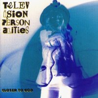

Television Personalities |
 1992 - Fire - FIRE 32 - DLP/CD/MC Songs: You Don't Know How Lucky You Are Hard Luck Story Number 39 Little Works Of Art Razorblades & Lemonade Coming Home Soon Me And My Big Ideas Honey For The Bears I See Myself In You Goodnight Mr. Spaceman My Very First Nervous Breakdown We Will Be Your Gurus You Are Special And You Always Will Be Not For The Likes Of Us You Are Younger Than You Know Very Dark Today I Hope You Have A Nice Day This Heart's Not Made Of Stone Baby, You're Only As Good As You Should Be Closer To God
The Performers: Special thanks to Kevin White at the Live Room Respect due to the prisoners on Death Row, Tennesee, for their singing on the album title track
Sleeve photography by Alison Withers
Recorded at Red Fort Studios, Middlesex |